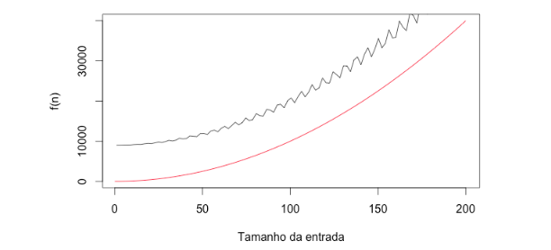
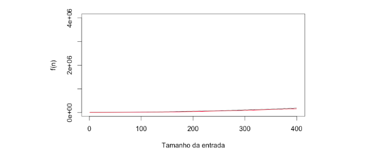
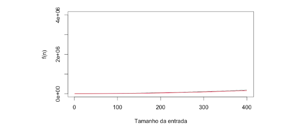
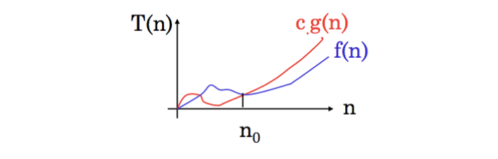
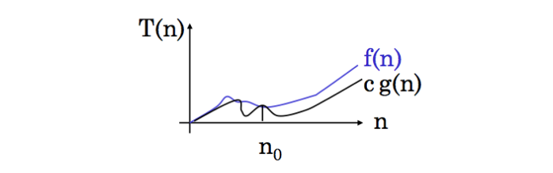

Análise Assintótica
No material introdutório de análise de algoritmos aprendemos a definir a função que descreve o custo de execução de algoritmos. Vimos exemplos simples cujas funções são também simples. Contudo, vamos supor que a função que descreve o tempo de execução de um algoritmo é dada por:
$1.1 * n^2 + (10 + \sin(n + 15) * n^{1.5}) + 9000$
Você há de convir que não é simples olhar para essa função e ter uma ideia clara do crescimento dela, certo? Lembra que nossa motivação para estabelecer essa função é simplificar nossa vida. É olhar para a função e ter uma ideia de como ela se comporta à medida que o tamanho da entrada cresce. Então, temos um problema aqui. Essa função não está ajudando nossa vida. Precisamos simplificá-la.
A Solução. Simplificar. Na verdade, nós já utilizamos algumas simplificações para facilitar a análise de algoritmos. A principal delas é ignorar o custo real das operações primitivas, utilizando a constante C ou 1. Agora, faremos mais uma abstração simplificadora, chamada ordem de crescimento.
A ideia é determinar como o algoritmo se comporta para valores muito grandes de entrada. Neste caso, ignoramos as constantes e os valores de menor magnitude por entender que eles não são significativos diante dos valores de maior magnitude.
Na prática, isso significa dizer que podemos:
- ignorar as constantes;
- ignorar os expoentes de menor magnitude.
No exemplo fictício da função acima, podemos então fazer as seguintes simplificações.
f(n) = 1.1 * n ** 2 + (10 + sin(n+15)*n**1.5) + 9000
Ou seja, do ponto de vista da ordem de crescimento, para grandes valores de $n$, as constantes e os expoentes de maior magnitude são insignificantes, nos permitindo simplificar a expressão do tempo de execução para $\Theta(n^2)$. A notação theta será discutida com mais detalhes na próxima seção.
Agora sim, é muito mais direto olhar para $n^2$ ter uma ideia clara do crescimento do tempo de execução do algoritmo, porque $n^2$ é uma função que já conhecemos bastante.
O interesse está na ordem de crescimento das funções, que facilita a análise e comparação de diferentes soluções. Por exemplo, na escolha entre uma solução $\Theta(\log n)$ e uma solução $\Theta(n)$, é preferível a primeira, pois à medida que o tamanho da entrada cresce, o tempo de execução cresce mais lentamente que $\Theta(n)$.
“Ainda não entendi. Você está querendo dizer que $f(n) = 1.1 * n^2 + (10 + \sin(n + 15) * n^{1.5}) + 9000$ e $g(n) = n^2$ são iguais?”
Não. Eu estou dizendo que elas pertencem à mesma classe de funções, as funções quadráticas. Eu estou querendo dizer que essas duas funções possuem a mesma ordem de crescimento para grandes entradas e que se aproximam muito uma da outra para grandes valores de $n$.
Vou te mostrar. Os gráficos da sequência abaixo ilustra essas duas funções. $f(n)$ está destacada em azul e $g(n)$ em vermelho. A única diferença é que a entrada (eixo x) vai aumentando de um gráfico para outro.

 

Note que no primeiro gráfico, para entradas de 0 a 200, $f(x)$ tem uma curva semelhante à $g(x)$, mas estão distantes uma da outra. Depois, na segunda figura, a entrada passa a variar de 0 a 300 e já conseguimos notar uma aproximação dessas duas curvas. Por fim, no último gráfico, com entradas variando de 0 a 400, as duas curvas já estão muito próximas uma da outra.
Outro exemplo. Através da identificação das operações primitivas e da quantidade de vezes que são executadas no algoritmo de busca linear chegamos à seguinte função:
$f(n) = 3*c*n + 3*c$
Aplicando as diretrizes simplificação, temos:
f(n) = 3 * c * n + 3 * c
Isto é, $f(n) = 3*c*n+3*c$ é $\Theta(n)$. Isso significa dizer que f(n) tem a mesma ordem de crescimento que uma função linear.
Dizer que um algoritmo é linear significa que o tempo de execução do algoritmo cresce linearmente em função do tamanho da entrada.
Mais um exemplo. Através da identificação das operações primitivas e da quantidade de vezes que são executadas no algoritmo de identificação de elementos duplicados em um array chegamos à seguinte função:
$f(n) = 3 * c + 2 * c * n + 3 * {n^2}/2 + c * (n^2 + n)/2$
Aplicando as diretrizes simplificação, temos que $f(n) = \Theta(n^2)$. Isso significa dizer que $f(n)$ tem a mesma ordem de crescimento que uma quadrática.
Análise Assintótica
Quando observamos tamanhos de entrada grande o suficiente para tornar relevante apenas a ordem de crescimento do tempo de execução, estamos estudando a eficiência assintótica.
Há pouco, aplicando as diretrizes de simplificação, aprendemos que funções complexas podem ser mapeadas para classes de funções sobre as quais conhecemos o crescimento ($n$, $\log n$, $n^2$ etc). Para ilustrar esse mapeamento utilizamos a notação $\Theta$. Chegou a hora de entendermos o que essa notação significa.
Primeiro, preciso deixar claro que cometi alguns abusos matemáticos para fins didáticos. Vamos relembrar esses abusos e explicá-los um a um.
$2*n + 1 = \Theta(n)$
Theta ($\Theta$) é um conjunto de funções. Nesse caso, o conjunto das funções lineares. Por isso, é um abuso dizer que $2*n + 1$ é $\Theta(n)$. A maneira formal de dizer é: $2*n + 1$ pertence à $\Theta(n)$.
Além disso, poderíamos ter escolhido qualquer função linear para dizer que $2 * n + 1$ tem a mesma ordem de crescimento. Nós escolhemos $n$ porque é a mais simples.
A notação $\Theta$
Agora vamos definir formalmente o que significa essa notação. Para duas funções $f(n)$ e $g(n)$, dizemos que $f(n)$ é $\Theta(g(n))$ se
$0<=c1*g(n)<= f(n)<= c2*g(n), \forall n>=n0$
Vamos entender o que essa inequação complicada quer nos dizer. Em um resumo bem simplista ela está dizendo que se a gente “imprensar” $f(n)$ com $g(n)$ multiplicada por duas constantes diferentes, dizemos que $f(n)$ é $\Theta(g(n))$.
Vamos ao exemplo. Lembra da função que descreve o tempo de execução da busca linear? Vamos tentar demonstrar que essa função é $\Theta(n)$.
$f(n) = 3*c*n+3*c$
O primeiro passo que vamos fazer é trocar as constantes por 1. Isso já foi dito antes. Usar $c$ ou 1 tem o mesmo efeito. Assim, temos:
$f(n) = 3n+3$
Agora vamos voltar a inequação. Como “desconfiamos” que $f(n) = 3n+3$ é $\Theta(n)$, escolhemos $g(n)=n$. Poderíamos escolher qualquer função linear para representar $g(n)$, escolhemos a função linear mais simples para facilitar nossa vida. Assim, a inequação fica:
$0<=c1*n<= 3n+3<= c2*n, \forall n>=n0$
Agora precisamos encontrar valores para $c1$ e $c2$ para que essa inequação seja verdadeira. Vamos tentar com c1=1 e c2=6.
$0<=n<= 3n+3<= 6*n, \forall n>=n0$
Se verificarmos com $n=1$, vemos que a inequação é verdadeira:
$0<=1<= 6<= 6$
Não é difícil também notar que $\forall n > 1$ ela sempre será verdadeira. Conseguimos, então, demonstrar que $f(n) \in \Theta(n)$, pois $g(n)=n$ limita inferior e superiomente $f(n)$.
Na verdade, todas as funções lineares são limitadas inferior e superiormente por $n$. No nosso linguajar, podemos dizer que todas as funções abaixo pertencem à $\Theta(n)$.
$7*n, 827643*n, 5n+21, 54n +1...$
Formalmente dizemos que $g(n)=n$ é um limite assintótico restrito para $f(n)$. A figura abaixo descreve essa relação entre uma função quadrática e as funções $3n$ e $n^2$.

Em português estamos dizendo que existe, para grandes valores de $n$ e a partir de um número inteiro positivo $n0$, $c1$ e $c2$ tais que $c1*g(n)<= f(n)<= c2*g(n)$.
Em termos simplistas, $f(n) \in \Theta(g(n))$ significa dizer que o crescimento de f(n) é igual ao de g(n).
Outro exemplo. Suponha que a função $7 * n^4 + 5 * n^2 +10$ descreva o custo de execução de um algoritmo. Se aplicarmos as abstrações simplificadoras, desconfiamos que $f(n) \in \Theta(n4)$, certo? Vamos demonstrar formalmente.
$0 <= c1 * n^4 <= 7 * n^4 + 5 * n^2 + 10 <= c2*n4, \forall n >= n0$
Se escolhermos $c1=7$, $c2=22$ e $n0=1$, temos:
$ 0 <=7 <= 22 <= 22 $
Na verdade, todas as funções quadráticas são limitadas inferior e superiormente por $n^2$. No nosso linguajar, podemos dizer que todas as funções abaixo pertencem à $\Theta(n^2)$.
$ 43 * n^2 + 7n + 1, 5 * n^2 + 21, 7 * n^2...$
Em resumo, para demonstrar formalmente precisamos dos seguintes passos:
Aplicar as abstrações simplificadores em $f(n)$ para termos uma proposta para $g(n)$.
Encontrar valores de $c1$, $c2$ e $n0$ para os quais a inequação $0<=c1*g(n)<= f(n)<= c2*g(n)$ é verdadeira.
Há mais 4(!) notações para estabelecer a relação entre funções. Neste material vamos ver apenas mais duas porque considero que é suficiente. Independente disso, todas são nada mais do que alterações na inequação que estabelecemos para $\Theta$. Por exemplo, a próxima notação que veremos, provavelmente a mais popular de todas, nada mais é do que retirar o limite inferior da inequação e apenas estabelecer um limite superior.
Notação O (Big O notation)
Enquanto a notação $\Theta$ define os limites inferior e superior de uma função, a notação $O$ define apenas o limite superior. Ou seja, define um teto para uma determinada função.
Para duas funções $f(n)$ e $g(n)$, dizemos que $f(n)$ é $O(g(n))$ se:
$0<=f(n)<= c*g(n), \forall n>=n0$
Veja que a diferença entre essa inequação e a utilizada para a notação é o fato de que aqui o limite inferior é 0 e não $c1 * g(n)$. A figura abaixo ilustra essa relação.

O processo para demonstrar que $f(n)$ é $O(g(n))$ é muito semelhante, mas nesse caso precisamos achar apenas os valores de $c$ e $n0$.
Exemplo. Suponha que a função $n^2 + 1$ descreva o custo de execução de um algoritmo. Se aplicarmos as abstrações simplificadoras, desconfiamos que $f(n) \in O(n^2)$, certo? Vamos demonstrar formalmente.
$0 <= n^2 + 1 <= c * n^2, \forall n>=n0$
Se escolhermos c1=1 e n0=1, temos:
$1 <= 1$
Como você pode perceber, toda função que pertence à $\Theta(n^2)$ também pertence à $O(n^2)$, porque $\Theta$ limita também superiormente como $O$. No entanto, nem toda função que pertence à $O(n^2)$, por exemplo, também pertence à $\Theta(n)$, pois $O$ estabelece apenas o limite superior. Por exemplo, a função $f(n) = 7$ é limitada superiormente por $n^2$ e, portanto, é $O(n^2)$. Todavia, não podemos dizer que ela é $\Theta(n^2)$ porque não há constante multiplicadora que, para n suficientemente grande, faça com que $c1 * n^2$ seja menor do que $7n$.
Simples, não é? A notação $O$ é bastante utilizada em Computação para discutir a eficiência de algoritmos. E há aqui uma curiosidade. Como discutido no parágrafo anterior, basta escolhermos uma função com $n$ elevado a um expoente maior do que o da função sob análise que conseguimos definir um limite superior para ele. Por exemplo, a função $f(n) = n^2$ é $O(n^2)$, $O(n^3)$, $O(n^4)$, e assim por diante. Todavia, faz mais sentido escolhermos uma função com o mesmo expoente, porque a informação é mais precisa. Ou seja, se uma função é quadrática, dizemos que ela é $O(n^2)$.
Por fim, outra particularidade dessa notação é que usamos com muita frequência nas discussões do a dia a notação $O$ ao invés da notação $\Theta$. Talvez porque seja mais fácil de falar $O$ do que theta e, como somos preguiçosos, tendemos a economizar energia até na fala. Mas é relevante destacar que, tipicamente, a semântica que queremos empregar nas discussões com o uso da notação $O$ é a mesma de $\Theta$.
Em termos simplistas, $f(n) \in O(g(n))$ significa dizer que o crescimento de f(n) é menor ou igual ao crescimento de g(n).
Notação Omega ($\Omega$)
A notação $\Theta$ define o limite inferior e superior. $O$ define apenas o limite superior. E $\Omega$? Acertou. Apenas o limite inferior. Para duas funções $f(n)$ e $g(n)$, dizemos que $f(n)$ é $\Omega(g(n))$ se:
$ 0 <= c * g(n) <= f(n), \forall n>=n0$
A figura abaixo ilustra essa relação.

O processo para demonstrar que $f(n)$ é $\Omega(g(n))$ é muito semelhante, mas nesse caso precisamos achar apenas os valores de $c$ e $n0$.
Exemplo. Suponha que a função $n^2 + 1$ descreva o custo de execução de um algoritmo. Se aplicarmos as abstrações simplificadoras, desconfiamos que $f(n) \in \Omega(n^2)$, certo? Vamos demonstrar formalmente.
$ 0 <= c * n^2 <= n^2 + 1, \forall n >= n0$
Se escolhermos $c1=1$ e $n0=1$, temos:
$ 1 <= 2$
Não é difícil perceber que essa inequação é verdadeira para todo $n0$ maior do que 1.
Como você pode perceber, toda função que pertence à $\Theta(n^2)$ também pertence à $\Omega(n^2)$, porque $\Theta$ limita também inferiormente como $\Omega$. Contudo, nem toda função que pertence à $\Omega(n^2)$ também pertence à $\Theta(n^2)$, pois $\Omega(n^2)$ estabelece apenas o limite inferior. Por exemplo, a função $f(n) = 7 * n$ é limitada inferiormente por $n$, portanto é $\Omega(n)$. Contudo, não podemos dizer que ela é $\Theta(n^2)$ porque não há constante multiplicadora que para $n$ suficientemente grande faça com que $c1 * n$ seja maior do que $7 * n^2$.
É simples definir um limite inferior para qualquer função. Basta utilizar o expoente 0. Ou seja, todas as funções são $\Omega(1)$. Mais do que isso, podemos escolher expoentes menores. Por exemplo, a função $f(n) = n^2$ é $\Omega(n)$, $\Omega(log n)$ e $\Omega(1)$. Todavia, faz mais sentido escolhermos uma função com o mesmo expoente, porque a informação é mais precisa. Ou seja, se uma função é quadrática, dizemos que ela é $\Omega(n^2)$.
Em termos simplistas, $f(n) \in \Omega(g(n))$ significa dizer que o crescimento de f(n) é maior ou igual ao crescimento de g(n).
As duas notações restantes são $o$ (o minúsculo) e $\omega$ (omega minúsculo). Como disse, eu considero essas duas notações menos importantes que as demais e não vou discuti-las de forma aprofundada.
** Apenas deixo aqui registrado que $o$ é muito semelhante à $O$, removendo apenas o sinal de igualdade da inequação:
$0<=f(n)< c*g(n), \forall n>=n0$
Ou seja, não podemos dizer, por exemplo, que $f(n) = n^2 + 3$ é $o(n^2)$. $f(n) = n^2 + 3$ é $o(n^3)$, $o(n^4)$, $o(n^5)$ etc.
Por outro lado, $\omega$ é muito semelhante à $\Omega$, removendo apenas o sinal de igualdade da inequação:
$0 <= c*g(n) < f(n), n>=n0$
Ou seja, não podemos dizer, por exemplo, que $f(n) = n^3 + 2$ é $\omega(n^3)$. $f(n) = n^3 + 2$ é $\omega(n^2)$, $\omega(n)$, $\omega(log n)$ etc.
Notas
Este material foi inspirado nos Capítulos 3 e 4 do livro “Algoritmos: Teoria e Prática” de Cormen et. al.
Para entender este material é muito importante ler a introdução à análise de algoritmos.